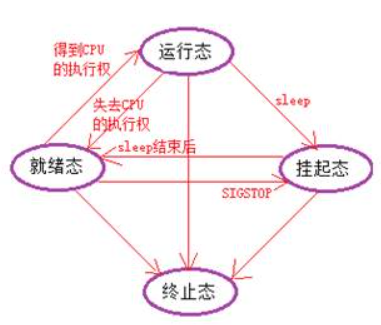

Linux 进程管理
9-1 并发与并行：
并发：在同一个 cpu 上，并且在一个时间段时，同时运行多个程序。比如在 1000 毫秒内，我们有 5 个程 序需要执行，所以我们可以将 1000 毫秒分为 5 个 200 毫秒，让每个程序都占用 200 毫秒的 cpu 使用权，这样 在 1000 毫秒内就可以执行 5 个程序。
并行：大于等于 2 个程序同时执行，假设我们的 cpu 有多个核心，那么每个程序都独占一颗核心，这样他 们就可以同时进行了。
9-2 pcb - 进程控制块：
每一个进程中都有一个 pcb，他用来维护进程的相关信息，linux 内核的进程控制块是 task struct 结构体。 这个结构体中有一个成员变量用于存储进程 id，这个 id 是个不为 0 的整数。在 c 语言中用 pid_t 类型表示。同 时也有一个成员用来表示进程的状态（就绪态，运行态，挂起态，停止态）。
9-3 进程状态：
进程有五种状态，分别是：初始态，就绪态，运行态，挂起态，终止态。
初始态：这个时候进程正在等待被执行，进行一些初始化的操作，此时等待系统为它分配资源。
就绪态：此时线程已经准备就绪，如果它竞争或得到 cpu 的使用权后，那他就会开始执行了，并且由就绪 态转变为运行态；如果它得到了 SIGSTOP 信号，则会进入挂起态，当然可以对终止该进程，让他成为终止态。
运行态：线程在运行时成为运行态，如果线程这时失去了 cpu 的使用权则会变为就绪态；如果这时对他使 用 sleep，则会休眠进入挂起态，当然可以对终止该进程，让他成为终止态。
挂起态：进程收到停止信号或者对进程使用 sleep 则会进入挂起态，如果 sleep 结束以后则会由挂起态变 为就绪态，当然可以对终止该进程，让他成为终止态。
终止态：进程执行完毕或者被意外终止，进程也可以被发送 SIGKILL 或 SIGTERM 等信号强制终止。

9-4 进程创建：
fork 函数：
头文件：
#include <sys/types.h>
#include <unistd.h>
函数作用：创建子进程
函数原型： pid_t fork(void)
无函数参数。
返回值：调用成功父进程会返回子进程的 pid ，子进程则返回 0。调用失败返回 - 1.
fork 的原理：假设我们的源文件有 20 行代码，假设我们在第 5 行的时候调用了 fork 函数，这个时候 fork 函数生成一个子进程，子进程是父进程的一个副本，它继承了父进程的文件描述符，信号处理器，用 户 id，文件锁等待，它会从第 5 行开始接着往下执行。直至执行完毕或者被其他原因打断。并且父进程也 会接着往下执行。父进程可以通过 wait 函数来等待子进程退出，并且获取子进程的退出状态。父子进程的 执行顺序是看谁先抢到 CPU 的使用权。
9-5 查看继承运行状态和杀死进程：
ps 命令：
用于查看当前系统中正在运行的进程状态，它可以获取到子进程 id，父进程 id，运行时间，cpu 使 用率，内存使用率等等（ps 命令不需要包含头文件，它是系统的一个命令）。
格式：
ps 这样会获取与当前终端窗口关联的进程。
ps aux 显示所有正在运行的进程。
ps -ef 显示所以进程的详细信息。
ps -e –forest 以树形结果显示进程及其关系。
kill 命令：
用于向指定的进程发生信号，以改变他们的运行状态或者终止他们的执行。
头文件：#include <signal.h>
格式：
kill <PID> 发送SIGTERM信号给指定的pid进程，使该进程正常终止。
kill -9 <PID> 发送SIGKILL信号给指定的pid进程，使该进程强行终止。
killall <进程名> 通过进程名杀死匹配的所有进程。
pkill <进程名> 通过进程名杀死匹配的进程。
killall**** 和 pkill 的区别：假设有两个进程分别是他们的名字分别是 abc，abb 如果调用 killall a 则会杀死进程 名字中带 a 的进程。如果调用 pkill a 则杀不死任何一个，只能说是调用 pkill abc 或者 pkillabb 来杀死进程。 在使用 killall 时要格外小心，小心意外地杀死了不该杀死的进程。
9-6 获取进程的 pid:
调用以下函数需包含头文件： #include <unistd.h>
getpid：得到当前进程的 pid
原型： pid_t getpid(void);
getppid：得到当前进程父进程的 pid
原型： pid_t getppid(void);
9-7 exec 函数族
如果我们在进程中想要执行其他的命令或者是用户自己的程序则可以使用 exec 函数中的函数。我们可以 先使用 fork 创建子进程，并且通过 if 语句让子进程来执行对应的代码段，然后在子进程要执行的代码段中调用
调用 execl 函数族需要包含以下头文件：
#include <unistd.h>
#include <stdarg.h>
execl 函数：
execl 函数原型： int execl(const char *path , const char *arg0 , …, NULL);
函数功能：如果当前进程调用了该函数，则当前进程则不会接着往下执行原本的内容，而是去执行 execl 函 数中指定的程序。当执行完毕指定的程序后则会结束当前进程，可以理解为用新程序覆盖掉就程序。
函数参数：
path：要执行的程序的路径，可以是相对路径或者是绝对路径。
arg0：用来占位，一般填要执行程序的名称。
其他参数：如果程序需要接收参数，则可以在这里写入程序需要的参数。
最后记得写个 NULL。
函数返回值：如果调用成功则不返回，不再执行 execl 后面的代码。如果调用失败则会继续执行 execl 后面 的代码，同时返回 - 1。
execlp 函数：
execlp 函数原型： int execlp(const char *file , const char *arg, … ,NULL);
函数功能：与 execl 函数一致，但是他们有区别。
函数参数：
file：执行命令的名字，会根据 PATH 环境变量来搜索该命令。
arg：用来占位，一般填要执行程序的名称。
arg 后面：命令需要的参数。
最后记得写个 NULL。
函数返回值：同 execl 函数。
与 execl 函数的区别：如果想要进程执行系统命令时可以使用这个 execlp 函数，你只需要填你要执行的命 令即可，因为该函数会直接根据命令的名称然后去 PATH 环境变量中寻找该命令对应的应用程序，而 execl 则 不会，则需要你去使用绝对路径来指明要执行命令的具体位置。
9-8 进程回收
为什么要回收？
因为它占用 cpu 资源
孤儿进程与僵尸进程
孤儿进程：其父进程已经嘎了，子进程还活着，这时这个子进程就是孤儿进程。如果父进程死掉了则孤儿进程会被 init 进程领养，当孤儿进程退出后由 init 进程完成对孤儿进程的回收。
僵尸进程：父进程活着，但子进程死了，同时父进程没有使用 wait 或 waitpid 对其进程回收，则死掉的子进程会成为僵尸进程。如果要解决僵尸进程可以将僵尸进程的父进程杀死，从而让 init 进程对 其领养，有 init 进程完成对僵尸进程的回收。
进程回收函数 wait 和 waitpid
需包含头文件：
#include <sys/types.h>
#include <sys/wait.h>
#include <unistd.h>
wait**** 函数
函数原型： pid_t wait(int *status);
函数作用：阻塞当前进程，并且等待子进程退出，然后回收子进程残留的资源，之后获取子进程的结 束状态。
函数参数：一传入个整型指针，用于存储进程的退出状态信息。
** 函数返回值：** 调用成功则返回被清理的线程的 pid，失败或无子进程则返回 - 1.
获取 status 参数：
第一种方式是使用宏定义来解析 status 参数：
WIFEXITED(status)：该宏用于判断子进程是否正常退出。如果子进程正常退出则返回非零值，否则返回 0。
WEXITSTATUS(status)：该宏用于获取子进程的退出状态。如果子进程正常退出，则返回子进程 的退出状态值。
第二种方式是直接使用位运算和掩码来解析 status 参数：
WIFEXITED(status)：检查 status 参数的低位是否为 0，如果为 0 表示子进程异常退出，如果非 0 表示子进程正常退出。
WEXITSTATUS(status)：通过右移 8 位并与 255 进行按位与运算，获取子进程的退出状态值。
waitpid 函数：
函数原型： pid_t waitpid(pid_t pid , int *status , int options);
函数作用：同 wait，但是 waitpit 比 wait 更强大，它可以指定等待子进程结束并且获取其状态。
函数参数：
pid：指定要等待的子进程的 pid。
传入 -1 则等待任意进程。
传入 0 则等待与当前父进程在同一个进程组的任意子进程。
传入负值则等待进程组 ID 等于 pid 的任意子进程。
传入 具体的子进程 pid 则等待指定 pid 的子进程。
status：与 wait 函数中的一样，用于存储子进程的提出状态信息。
options：额外选项，可以使用多个选项进行位或操纵。
WNOHANG：非阻塞方式，如果没有子进程退出则立即返回，不会阻塞在 waitpid 函数处。
WUNTRACED: 也等待已经停止的子进程，但不包括被跟踪的子进程，子进程被跟踪是指它有一个被停止的子进程。
WCONTINUED: 也等待因 SIGCONT 而又启动执行的已停止子进程，只在 options 中指定了 WUNTRACED 时才有效。
函数返回值：返回值为正数则表示等待到的子进程的 pid。返回值为 0 则代表使用了 WNOHANG 选项，并且没有子进程退出。返回值为 - 1 代表调用出错或无子进程。